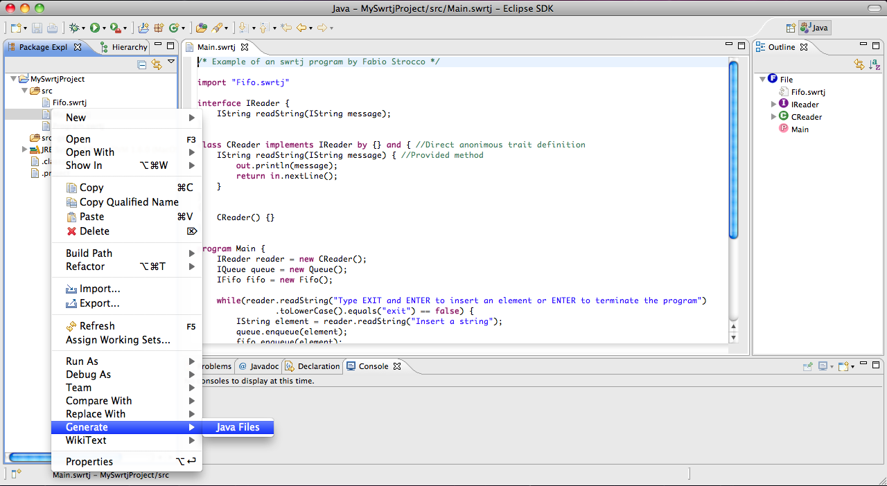

With the Swrtj plugin you can also generate java files. When you have created a new project (see How to create your first Swrtj project) you can choose a file and generate it. Right click on the selected file to open the pop-up menu and then choose Generate > Java Files.

After generating the files, a message will notify the outcome of the operation.
The generated java files will appear under the 'src-gen' directory.